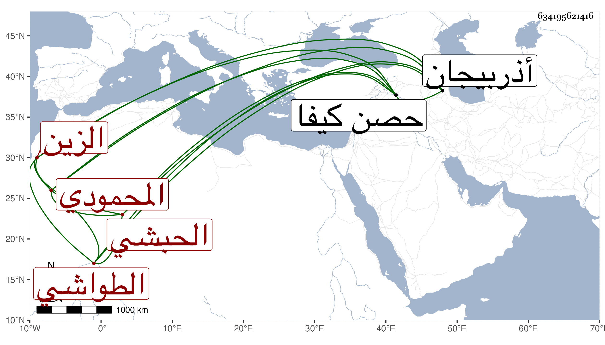

0902Sakhawi.DawLamic.ITO20230111-ara1.EIS1600.634195621416
Biography ID: 634195621416
610
مرجان الزين العادلي المحمودي الحبشي الحصفي الطواشي . أصله من خدام العادل سليمان صاحب حصن كيفا اشتراه ورباه وأدبه وأعتقه واختص به . فلما مات وذلك في سنة سبع وعشرين خرج من الحصن وهو فقير فدار البلاد كفقراء العجم ودخل أذربيجان وغيرها وقاسى فقرا لكنه تأدب وتهذب بالأسفار إلى أن قدم البلاد الشامية فاتصل بخدمه تعزى بردى المحمودي وغيره على حاله في البؤس والقلة حتى صار من جملة خدام الطباق بالقلعة ثم مقدم بعضها فحسنت حاله وملك فرسا وصار يعلف الدجاج ويقدمه لمقدم المماليك ونائبه ثم لمغلباي طاز وزاد في التردد إليه إلى أن قفز به الظاهر جقمق وعمله نائب المقدم بسفارته بعد توقفه في ذلك ثم رقاه للتقدمة فعظم وضخم ونالته السعادة ثم عزله الأشرف إينال ثم أعيد ببذل وحج في سنة اثنتين وستين أمير الأول فساءت سيرته ورجع فصادر من كان هو معه كالخادم وله عليه من الأيادي ما لا يوصف بالضرب والمال . ولم يلبث أن مات في جمادى الآخرة سنة خمس وستين وقد قارب الستين وكان جسيما طوالا أسود اللون ظالما عسوفا طماعا مسرفا على نفسه سيئة من سيئات الدهر وغلطاته اشتمل على قبائح أنزه قلمي عنها وتبدل ما كان عليه في أول مباشرته التقدمة من المحاسن نسأل الله حسن الخاتمة .
